lorenz_partial_smoke_p30_nd30_fnnautodimProject: Lorenz_INDpartial_NDInitSweep_autodim_D1_NormTrue__JacobianODE
Launched: 2026-04-26T18:10:12Z
Completed: 2026-04-26T18:52:41Z
Outcome: complete_clean
Git: latent-JacobianODE @ 758b604
Expected runs: 1
lorenz_partial_smoke_p30_nd30_fnnautodimDescription
Lorenz partial-obs smoke for FNN autodim. n_delays=30, obs_noise=0.05, additive coupling, split-mode loss. 5 epochs only — purpose is to validate the FNN autodim code path, not to train a useful model.
Hypothesis
With model.n_target_dim_method='fnn' and n_delays=30 (where the whitened-PCA-FNN k=1 stop-at-min diagnostic robustly returned dim=3 across all noise levels), the autodim path should pick n_target_dims=3 and training should proceed without error.
Success criteria
Chosen run (by best_traj_loss): 4qs9wmdf — traj_loss=0.10308, MASE=3.1917, R²=0.7184, LC loss=0.275, epoch=3.0
Runs analyzed: 1 (expected 1)
| run_idx | run_id | best_traj_loss | best_MASE | R² | LC loss | epoch |
|---|---|---|---|---|---|---|
| 0 | 4qs9wmdf |
0.10308 | 3.1917 | 0.7184 | 0.275 | 3.0 |
| Criterion | Verdict | Note |
|---|---|---|
| Autodim resolves to n_target_dims=3 (logged as n_target_dims_fnn_auto) | Unknown | |
| Run completes 5 epochs without divergence | Unknown |
Automated verdicts use simple numeric-threshold parsing and may mis-classify qualitative criteria. The Discussion section below takes precedence.
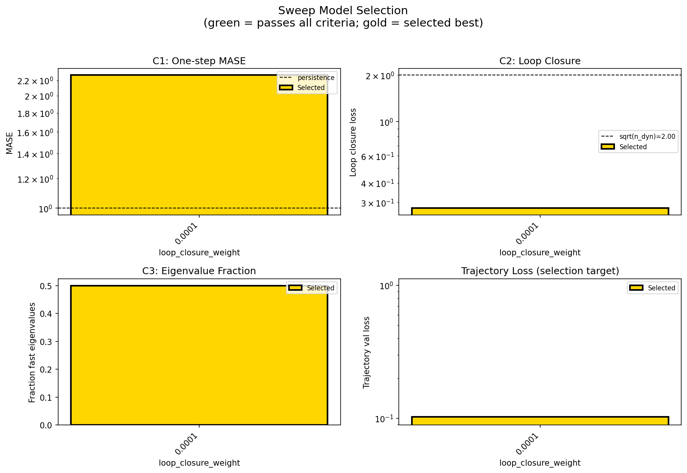
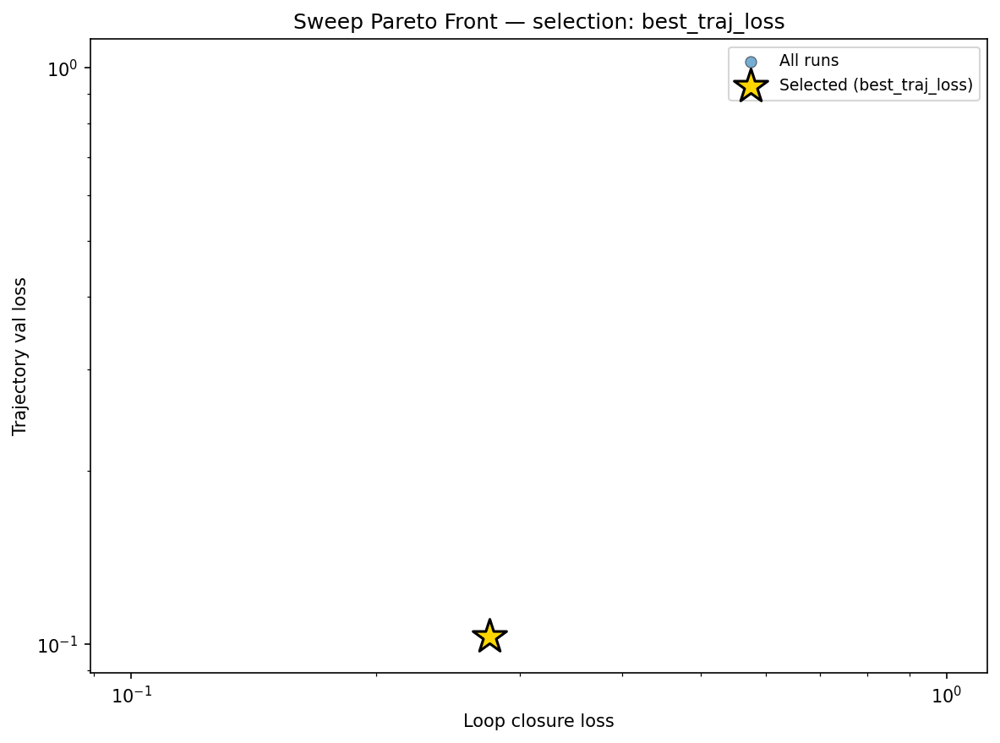
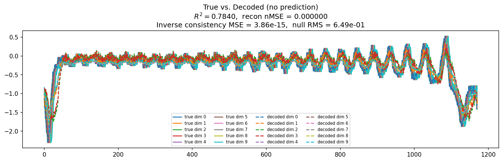
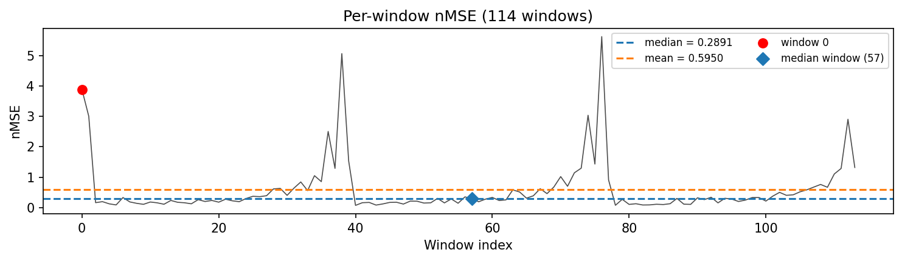
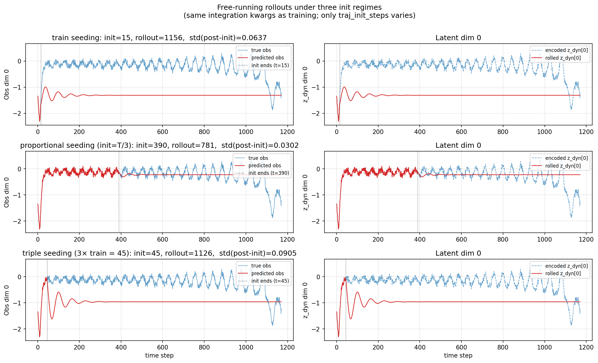
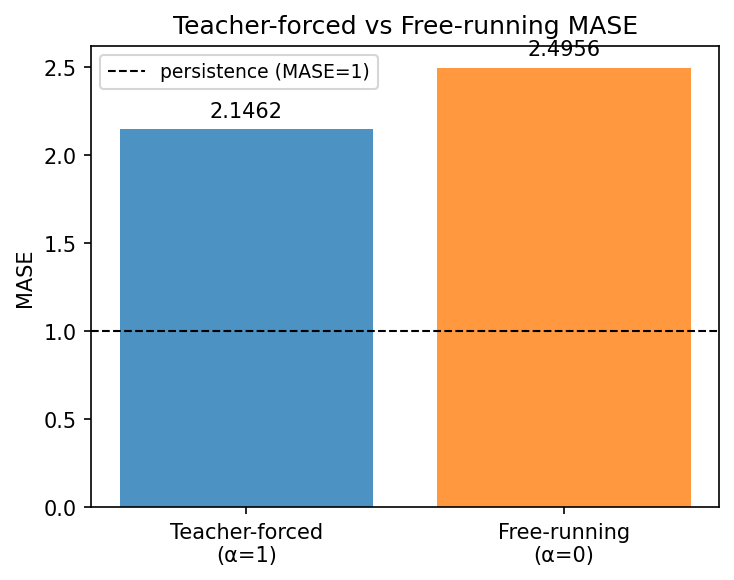
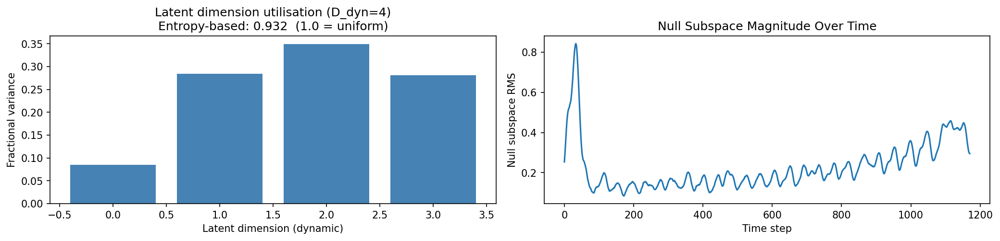
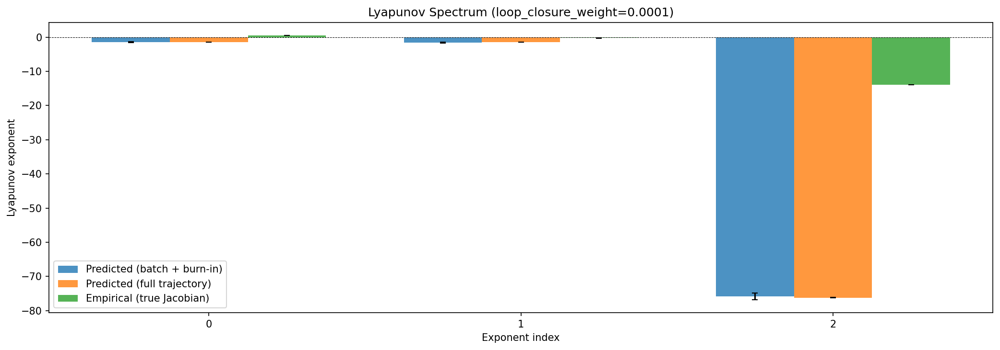
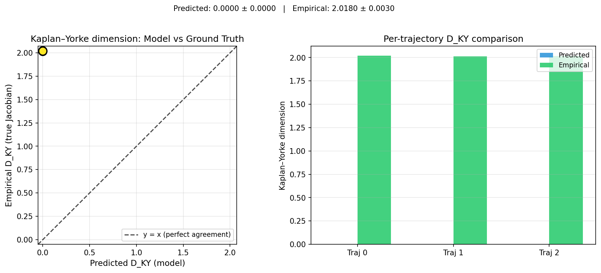
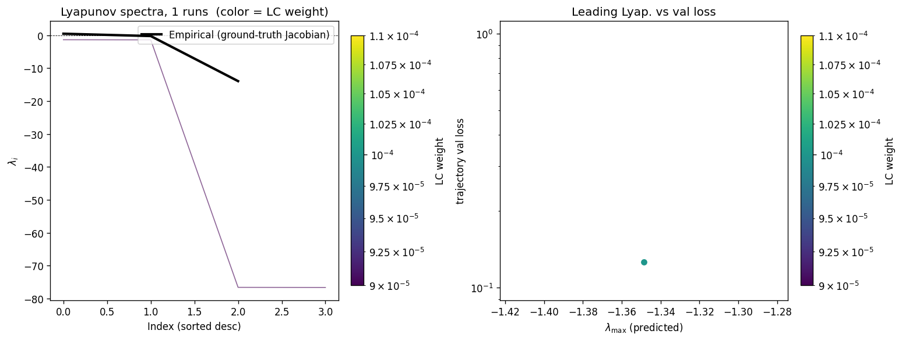
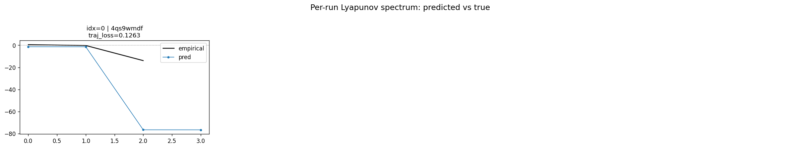
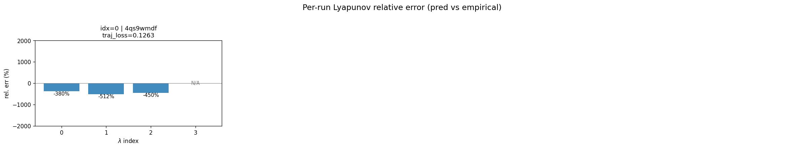
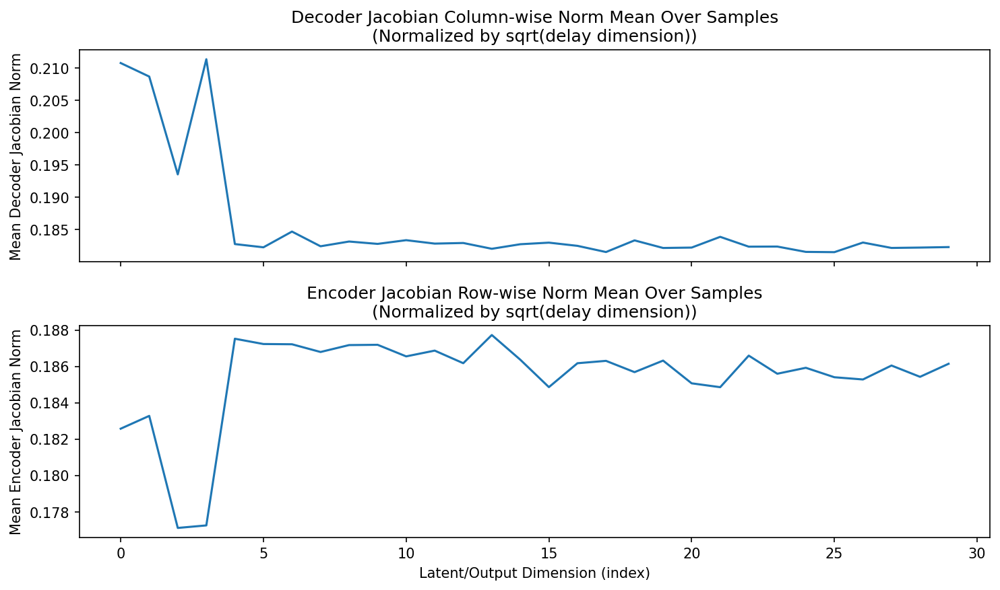
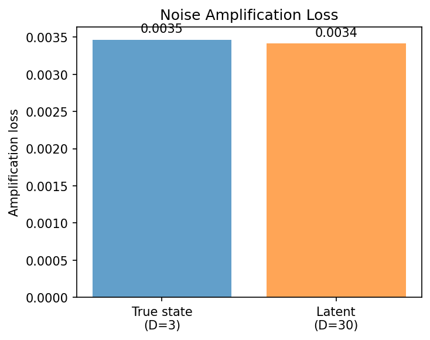
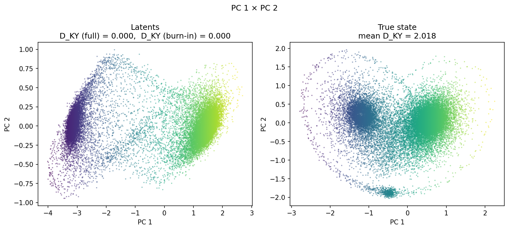
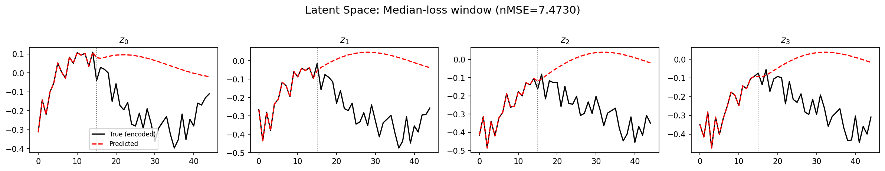
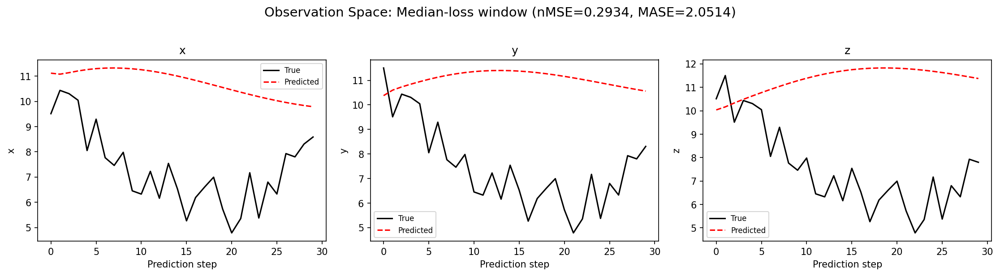
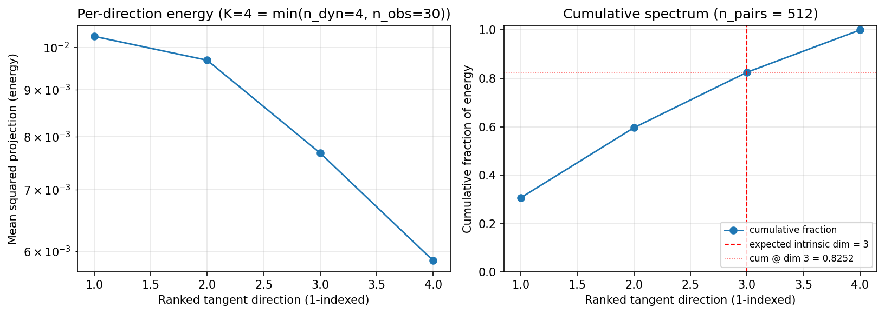
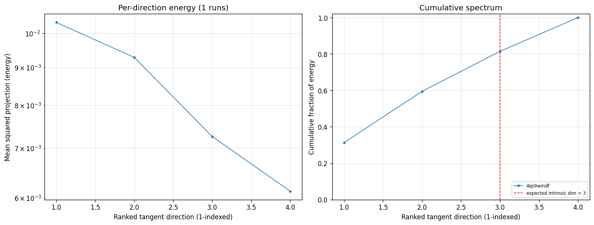
(to be written)
run_analytics stdoutrun_analyticsNo run_id provided — selecting best run from group 'lorenz_partial_smoke_p30_nd30_fnnautodim' ...
Found 1 total runs in JacobianODE/Lorenz_INDpartial_NDInitSweep_autodim_D1_NormTrue__JacobianODE (group=lorenz_partial_smoke_p30_nd30_fnnautodim)
All runs (state, loop_closure_weight, tangent_entropy_weight, kl_dyn_weight):
4qs9wmdf: state=finished, lc=0.0001, te=0.0, kl_dyn=0.0
slurm_timeout_min not found in any run config — falling back to 180 min
Including 4qs9wmdf (lc=0.0001): use_all_runs=True (state=finished)
Found 1 effectively-done sweep runs:
loop_closure_weight=0.0001, tangent_entropy_weight=0.0, kl_dyn_weight=0.0 -> run_id=4qs9wmdf
n_dims=30, n_latent=30, n_dyn=4, dt=0.0150
run=4qs9wmdf: DiagnosticMetrics(one_step_mase=2.2717182636260986, loop_closure_loss=0.27524083852767944, fast_eigenvalue_fraction=0.5, trajectory_val_loss=0.10307984054088593) (from W&B history)
Ranking method: best_traj_loss
Best run ID: 4qs9wmdf
Best loop_closure_weight: 0.0001
Best tangent_entropy_weight: 0.0
Best kl_dyn_weight: 0.0
Best traj loss: 0.103080
Criteria applied: []
Surviving: 1 / 1
Auto-selected run_id: 4qs9wmdf
======================================================================
PARETO FRONTIER RUNS (1 runs)
======================================================================
Run ID LC Loss Traj Val Loss
------------ -------------- --------------
4qs9wmdf 0.275241 0.103080 <-- selected
======================================================================
RANKING METHOD COMPARISON (over 1 survivors)
======================================================================
Method Run ID LC Loss Traj Val Loss
---------------------- ------------ -------------- --------------
best_traj_loss 4qs9wmdf 0.275241 0.103080 <-- active
pareto_knee 4qs9wmdf 0.275241 0.103080
geo_rank 4qs9wmdf 0.275241 0.103080
minimax_rank 4qs9wmdf 0.275241 0.103080
geo_log_score 4qs9wmdf 0.275241 0.103080
minimax_log_score 4qs9wmdf 0.275241 0.103080
======================================================================
Loading run 4qs9wmdf from JacobianODE/Lorenz_INDpartial_NDInitSweep_autodim_D1_NormTrue__JacobianODE ...
Loading checkpoint epoch=3-step=200.ckpt...
Train dataset shape: torch.Size([24772, 45, 30])
Validation dataset shape: torch.Size([7882, 45, 30])
Test dataset shape: torch.Size([3378, 45, 30])
Train trajectories dataset shape: torch.Size([22, 1171, 30])
Validation trajectories dataset shape: torch.Size([7, 1171, 30])
Test trajectories dataset shape: torch.Size([3, 1171, 30])
Loading checkpoint epoch=3-step=200.ckpt...
Computing reconstruction ...
Computing MASE ...
Teacher-forced MASE: 2.1462
Free-running MASE: 2.4956
Computing latent utilization ...
Entropy-based utilization: 0.932
Null subspace mean RMS: 2.537502e-01
Computing Lyapunov exponents ...
Computing full-trajectory Lyapunov (3 test trajs, T=1171) ...
Predicted Lyapunov exponents (batch+burn-in, 128 windowed trajs):
λ_1 = -1.4347 ± 0.1352
λ_2 = -1.5584 ± 0.1125
λ_3 = -75.8424 ± 0.9143
λ_4 = -75.9782 ± 0.8983
Predicted Lyapunov exponents (full-length, 3 test trajs):
λ_1 = -1.4538 ± 0.0028
λ_2 = -1.4815 ± 0.0034
λ_3 = -76.2261 ± 0.0444
λ_4 = -76.2559 ± 0.0380
Empirical Lyapunov exponents (mean ± std):
λ_1 = +0.4677 ± 0.0259
λ_2 = -0.2173 ± 0.0549
λ_3 = -13.9174 ± 0.0513
Mean KY dim (predicted): 0.000 ± 0.000
Mean KY dim (empirical): 2.018 ± 0.003
Mean KY dim (burn-in): 0.000 ± 0.000
Computing prediction windows ...
Windows: 114 — nMSE min=0.0725, median=0.2891, mean=0.5950, max=5.6299
Computing long-trajectory free-running rollouts ...
Computing encoder/decoder Jacobians ...
encoder_jacobian: (128, 30, 30)
decoder_jacobian: (128, 30, 30)
Computing amplification loss ...
Amplification loss — True state: 0.003467
Amplification loss — Latent: 0.003415
Computing tangent space spectrum ...